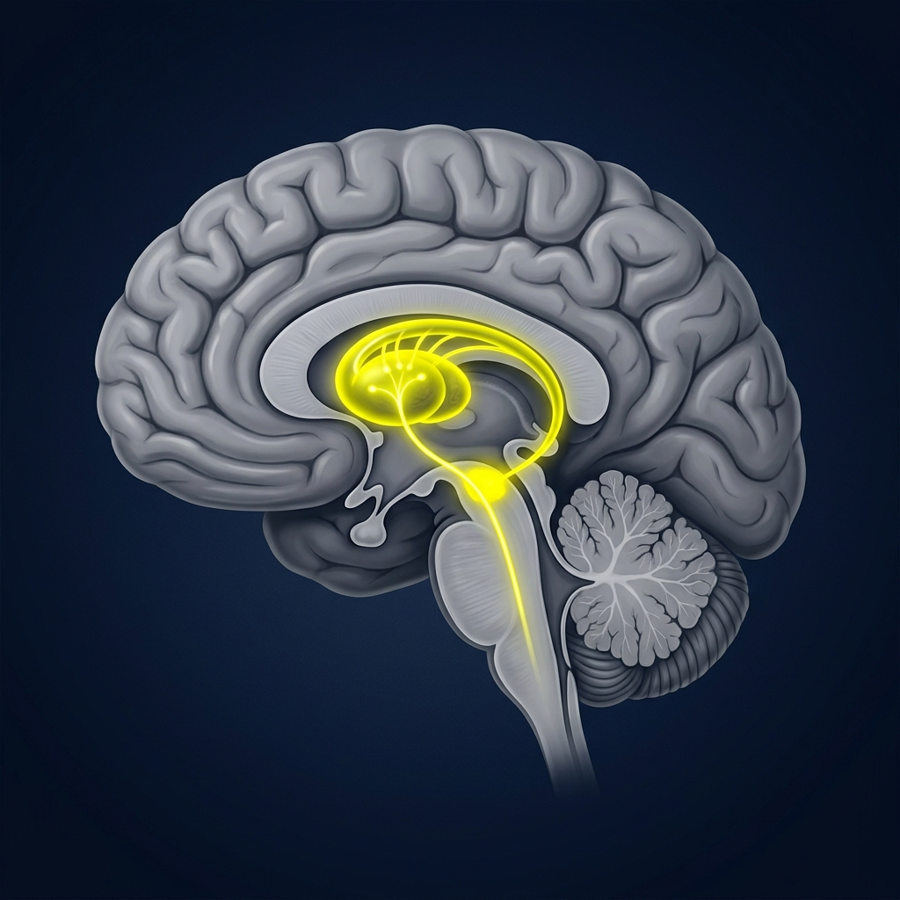
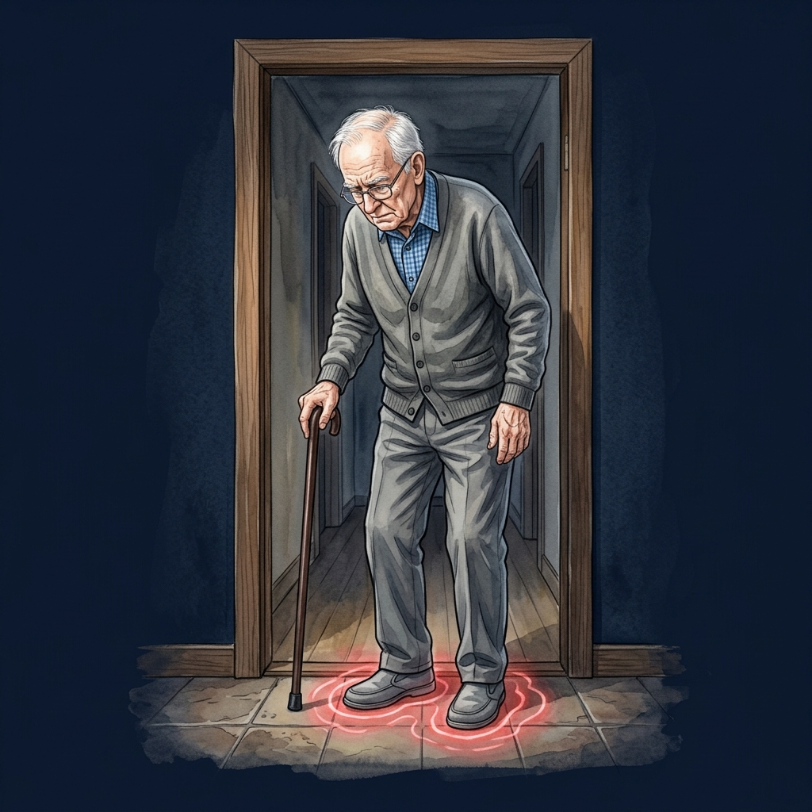

“Imagine trying to walk across a doorway… and suddenly your feet stop, as if they are glued to the floor. Your brain wants to move, your muscles are ready — but the step never happens.”


68-year-old patient, 9 years post-diagnosis. Experiences frequent "glued" episodes at doorways, leading to recent near-falls and loss of confidence.
| Traditional | New: aDBS |
|---|---|
| Levodopa Medication | "Closed-loop" System |
| Continuous DBS | Real-time Adjustments |
| One-size-fits-all | Personalized Response |
Data adapted from Wilkins et al., Brain Communications (2025).
Representative values based on Figure 4D.
Loss of dopamine neurons disrupts motor control pathways.
Altered signaling changes how movement commands are transmitted.
Failure of coordinated feedback between brain and musculoskeletal system.
Relationship between neural initiation and physical contraction.
Presentation developed for Physiology Course Assignment
Aditya Vivek & Saoud Al Emadi
Aditya Vivek & Saoud Al Emadi
Loading notes...